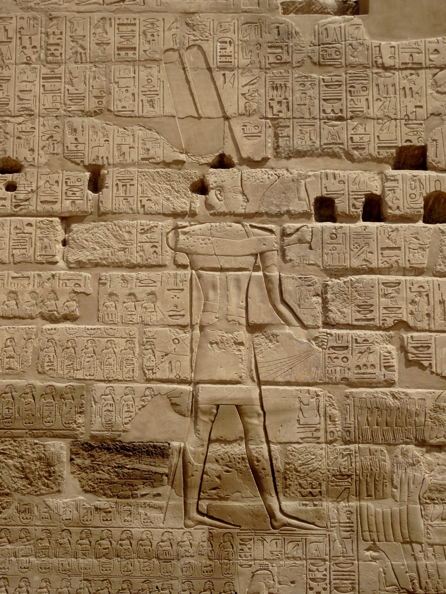

Bubastite Portal of Shoshenq I

- Find Name
- Bubastite Portal of Shoshenq I
- Description
- The Bubastite Portal is the colonnaded forecourt and inscribed south wall of the Temple of Amun at Karnak, built by Shoshenq I (Sheshonq I), founder of Egypt's 22nd (Libyan or Bubastite) Dynasty, who reigned c. 943-923 BC. Its great relief, carved for his Levantine campaign of about 925 BC, shows the pharaoh smiting Asiatic enemies while the god Amun presents him with name-rings listing more than 150 towns and peoples conquered or subjugated in Israel and Judah, including Megiddo, Gezer, Arad, and Beth-Shean. Shoshenq is traditionally identified with the biblical Shishak, who marched against Jerusalem in the fifth year of Rehoboam (1 Kings 14:25-28; 2 Chronicles 12:2-9).
- Historical Period
- Third Intermediate Period, 22nd Dynasty, c. 925 BC
- Evidence Class
- Contextual
- Interpretations
- The portal is the strongest Egyptian corroboration of a biblical king's campaign: an Egyptian king in the right decade lists conquests across exactly the Israelite and Judahite territory the Bible describes, and a Shoshenq victory-stele fragment was also found at Megiddo. The essential caution is that Jerusalem itself does not appear among the inscribed place names - scholars debate whether this reflects ideological selectivity, negotiated submission, or a campaign that differed from the biblical account, and a 2021 conference explicitly called for a fresh critical review. The portal therefore corroborates a Levantine campaign by the biblical Shishak's Egyptian counterpart; it does not by itself prove the Jerusalem sack or the temple treasures account.
- Alternative Names
- Shishak Relief; Shishaq Relief; Shishak Inscription
- Related Places
- Related Books
- Related Events
- Related People
- Scripture Illuminated
- Biblical Significance
- The Bubastite Portal puts a named Egyptian king's own victory inscription beside the Bible's account of Shishak's invasion in Rehoboam's reign - the closest thing to an Egyptian royal record of a biblical campaign.
- Artifact Date
- c. 925 BC
- Current Location
- In situ, Karnak, Egypt
- Date Discovered
- Documented 1799; interpreted by Champollion 1828
- Discovery Location
- Karnak, Egypt
- Timeline Era
- Divided Monarchy
Awaiting Review Not yet checked against scholarly sources. Treat its claims as provisional until this entry is reviewed. About verification
Last reviewed: not yet reviewed